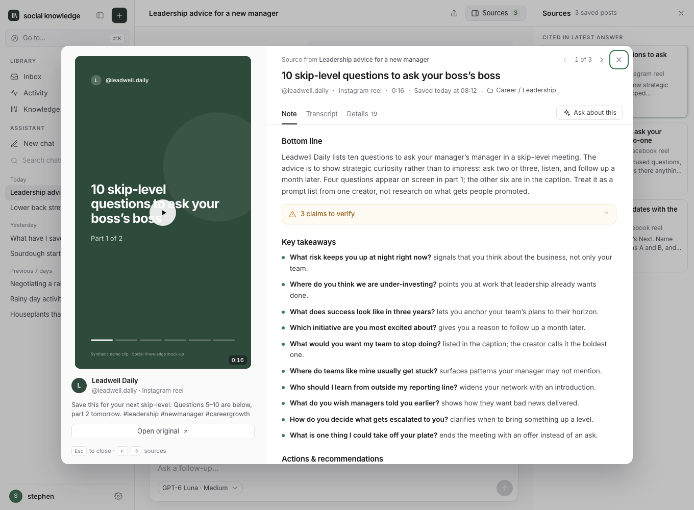
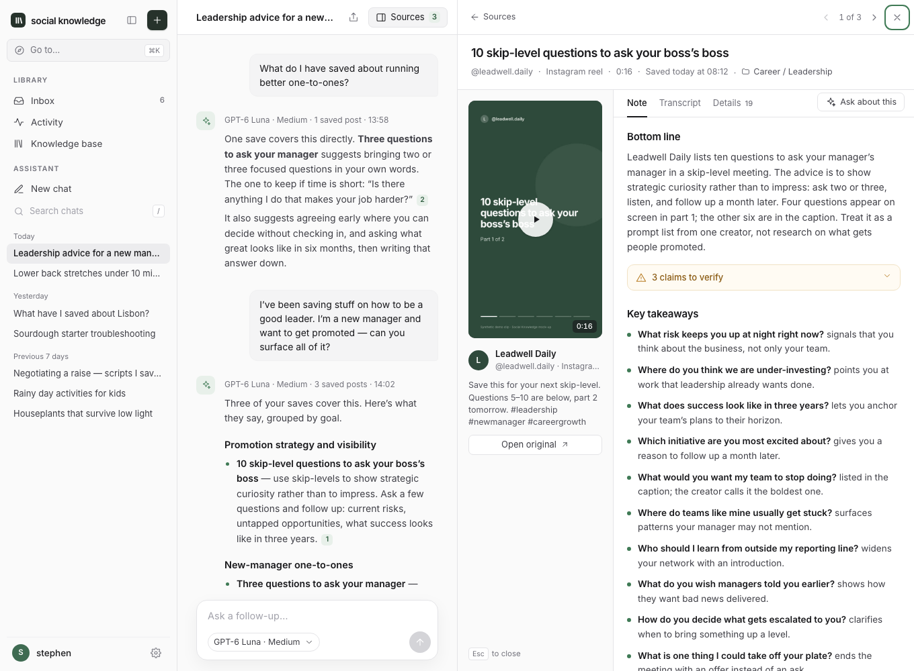

These mock-ups explored how to replace the old full-page note viewer and its wide black portrait-video box. B was approved and implemented in the app; A remains an alternative proposal. Both prototypes open a note over the chat or Inbox, keep your place, and show portrait media at its own shape. All content and media are synthetic.
Built like Settings: a scrim, a 14px dialog, the original post on the left and the note on the right. Focused reading; ← → steps through the answer’s sources or the Inbox.

Docks where Sources sits, or beside the Inbox list. The chat stays live next to it and you can resize the panel. On phones it becomes a bottom sheet.

| B · Centered modal | A · Side panel | |
|---|---|---|
| Reading width | About 640px of note next to a 360px portrait player. Comfortable for long notes. | About 420px of note next to a 200px player. The chat shrinks to about 416px. Both columns stay readable but tight. |
| Context | Chat or Inbox stays visible, dimmed. It is not interactive until you close (Esc, ×, or click the scrim). | Chat or Inbox stays live: you can type a follow-up or click another Inbox row, and the panel swaps in place. |
| Portrait video | Large and natural, fitted to the dialog height. No black side bars. | Small and natural, about 200 × 355px. |
| Landscape video | Wider left column. The dialog shrinks to fit short notes. | Stacks above the tabs, so it takes a lot of the panel’s height. |
| Phone | Full screen, like the Settings modal on mobile. | 90% bottom sheet with the chat visible above it. |
| Build cost | Reuses the Settings layer and the dialog focus hook. Lowest risk. | Needs a new docked region, a resize handle, scroll anchoring and non-modal focus rules. |
Screenshots: screenshots/ (desktop at 1360 × 1000, phone at 390 × 844). Review bar URL options: ?ctx=ask|inbox, &open=skip|portrait|landscape|images|none, &tab=note|text|details, &bar=0. Prototype only: Open original, Move and the menu show a short message instead of acting.